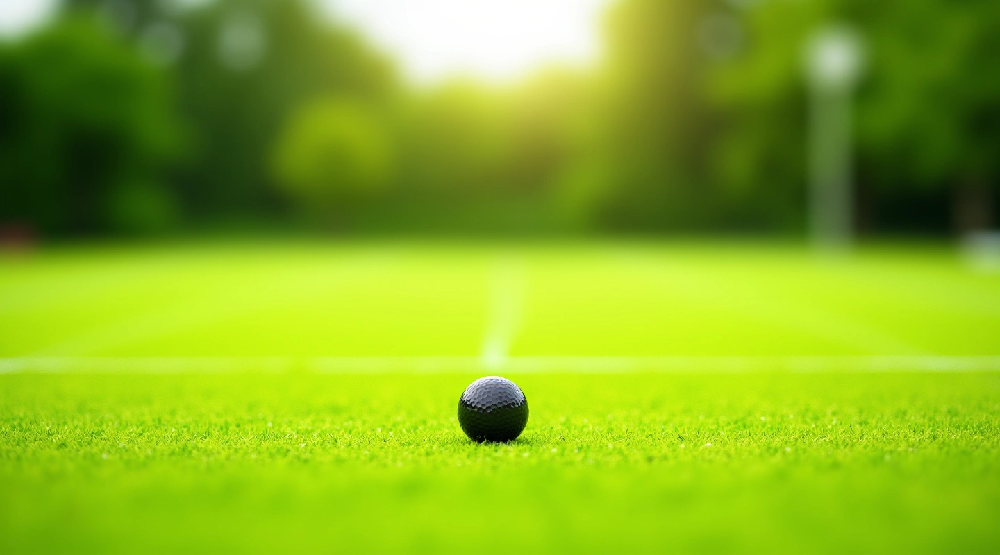

دليل شامل لنظام بطولات الكروكيه الرسمية
تعلّم قواعد اللعبة، أنظمة البطولات، والاستراتيجيات الفائزة مع أحدث المعايير الدولية

كيفية فهم نظام البطولة
نقدّم لك المكونات الأساسية لكل نظام تنظيمي
القواعد الأساسية
فهم أساسيات اللعبة من البداية. كيفية حساب النقاط والحركات الصحيحة والأخطاء الشائعة التي يجب تجنبها.
أنظمة البطولات
تصنيفات مختلفة للبطولات. من المباريات الفردية إلى البطولات الجماعية والبطولات الإقليمية.
الاستراتيجية والتكتيك
تطوير خطط اللعب الفعالة. نصائح عملية لتحسين الأداء والفوز في المباريات المهمة.
إدارة البطولات
عملية تنظيم بطولة احترافية. جدولة المباريات وتتبع النتائج وإدارة التصنيفات بكفاءة.
أحدث الأدلة والموارد

نظام المباراة الفردية: القواعس الأساسية
شرح مفصل لقواعد المباراة الفردية وكيفية حساب النقاط والفوز. يشمل الأخطاء الشائعة والحلول العملية.
اقرأ المزيد
بطولات الفريق: التنسيق والاستراتيجية
كيفية تنظيم بطولة فريق احترافية. نصائح عملية عن اختيار الفريق والتدريب.
اكتشف
جدولة البطولات والعمليات الإدارية
دليل عملي لتنظيم جدول البطولة وإدارة النتائج وتحديث التصنيفات.
اكتشفدور الحكم والقرارات الصعبة
إرشادات شاملة لدور الحكم والقرارات الرسمية. كيفية التعامل مع الحالات المعقدة بنزاهة.
اكتشففلسفتنا في نشر المعرفة
نؤمن بأن الكروكيه ليست مجرد لعبة — هي رياضة تحتاج إلى فهم عميق للقواعد والاستراتيجية والانضباط. منذ تأسيسنا في 2023، كنّا ملتزمين بتوفير أدلة واضحة وموثوقة لكل شخص يريد تحسين مستواه. لا نقدم وعود كاذبة أو اختصارات سريعة — بدلاً من ذلك، نركز على الشرح المفصل والأمثلة العملية والنصائح من واقع التجربة. كل دليل يمر عبر مراجعة دقيقة للتأكد من الدقة والوضوح. نحن نحترم وقتك وذكاؤك، ولهذا نقدم محتوى يستحق قراءتك.
هل تريد الاطلاع على أحدث الأدلة والتحديثات؟
تواصل معنا مباشرةكيف نعمل
التعليم الواضح
نشرح الأشياء بطريقة مباشرة بدون تعقيد غير ضروري.
الدقة والموثوقية
كل معلومة تمرّ عبر فحص دقيق قبل النشر.
نصائح عملية
نركز على ما يعمل فعلاً في الملعب والبطولات الحقيقية.
دعم المجتمع
نحن هنا للإجابة على أسئلتك والمساعدة في تطورك.
مجالات التركيز الرئيسية
القواعد والتنظيم
شرح شامل للقواعس الرسمية للكروكيه وكيفية تطبيقها بشكل صحيح في جميع الحالات.
أنماط البطولات المختلفة
من البطولات الفردية إلى الجماعية والدوري — كل نوع له خصائصه وتحدياته الفريدة.
الاستراتيجية والتكتيك
تطوير خطط اللعب الفعالة والقرارات الذكية تحت الضغط وفي الحالات المختلفة.
إدارة وتنظيم البطولات
كل ما تحتاج لتنظيم بطولة احترافية من الجدولة إلى إدارة النتائج والتصنيفات.
تطوير اللاعبين
برامج تدريب فعالة وطرق لتحسين المستوى من المبتدئين إلى المحترفين.
إجابات على الأسئلة الشائعة
ما الفرق بين المباراة الفردية والبطولة الجماعية؟
المباراة الفردية تتضمن لاعباً واحداً أو فريقاً من اثنين، بينما البطولة الجماعية تشمل فرقاً أكبر. النقاط تُحسب بطريقة مختلفة، والاستراتيجية تختلف بشكل كبير حسب عدد اللاعبين.
كم عدد اللاعبين المسموح به في فريق واحد؟
هذا يعتمد على نوع البطولة والقوانين المحددة مسبقاً. عادة ما تكون الفرق من 2-4 لاعبين، لكن قد تختلف حسب التنظيم المحلي والدولي.
كيف يتم اختيار الحكم في البطولات الرسمية؟
الحكم يجب أن يكون معتمداً ومدرباً على القواعس الرسمية. عادة يتم اختياره من قبل لجنة البطولة ويجب أن يكون محايداً وخبيراً في اللعبة.
ما هي أشهر الأخطاء في حساب النقاط؟
من أشهر الأخطاء عدم الانتباه للمسافة الصحيحة بين الكرات، عدم فهم قاعدة "الحق" في الضربة، والخلط بين نقاط المباراة ونقاط البطولة. كل خطأ له عواقب على النتيجة النهائية.
كيف أبدأ في تعلم الكروكيه من الصفر؟
ابدأ بفهم القواعس الأساسية والحركات الصحيحة. مارس في ملعب منتظم مع لاعبين ذوي خبرة. اقرأ الأدلة المفصلة وشاهد مباريات احترافية لفهم الاستراتيجية.
هل هناك معايير دولية موحدة للقواعس؟
نعم، هناك معايير دولية يتم الالتزام بها في معظم البطولات الرسمية. لكن قد تكون هناك اختلافات طفيفة حسب الاتحاد أو المنطقة الجغرافية.
هل أنت مهتم بتطوير مستواك في الكروكيه؟
اتصل بنا لمزيد من المعلومات والاستشارات المتخصصة. نحن هنا لمساعدتك على النجاح.
تواصل معنا الآننستخدم ملفات تعريف الارتباط لتحسين تجربتك. هل توافق على ذلك؟